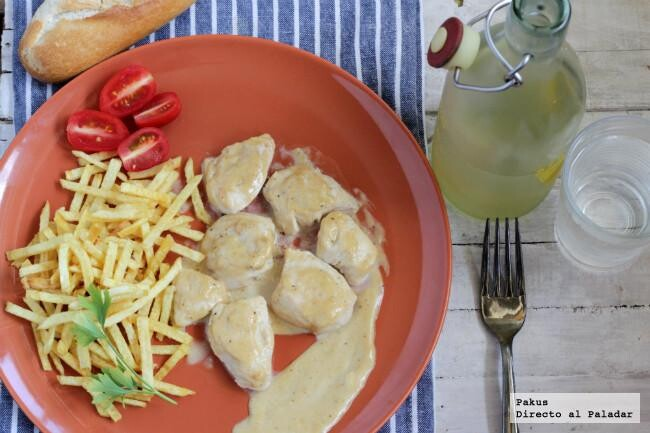

Pollo con salsa a la pimienta

En casa solemos comer pollo con bastante frecuencia y procuramos variar a menudo las recetas para no cansarnos
ya que por sí solo el pollo (y en especial las pechugas) no tienen demasiado sabor. Hoy vamos a preparar unos
jugosos tacos de pollo con una deliciosa salsa de pimienta casera.
Ingredientes
- 2 pechugas de pollo enteras sin piel
- 100 ml. de nata espesa o de cocina
- 25 granos de pimienta variados
- 1/2 cdita. de Bovril (concentrado de carne)
- Aceite de oliva virgen extra
- Sal gruesa
Preparación
- Comenzamos troceando la pechuga de pollo en tacos cortándola de forma transversal.
- Ponemos la sartén al fuego con la cucharada de aceite de oliva y esperamos a que esté muy caliente.
- Tostamos los tacos o tajadas de pollo en la plancha durante un minutito por cada cara y los reservamos.
- En la misma sartén ponemos la nata y dejamos que cueza y se reduzca durante dos o tres minutos, y de paso tomará parte de los jugos que haya soltado el pollo, enriqueciendo su sabor.
- En el mortero machacamos las bayas de pimienta (podéis usar mezcla de pimientas blanca, negra, roja para un sabor más interesante) y añadimos la pimienta a la nata.
- ncorporamos la media cucharadita de Bovril y probamos.
- Una vez tengamos la salsa a nuestro gusto, ponemos las tajadas de pollo en la sartén, las cubrimos con la salsa y dejamos que cuezan durante unos minutos, sirviendo a continuación.